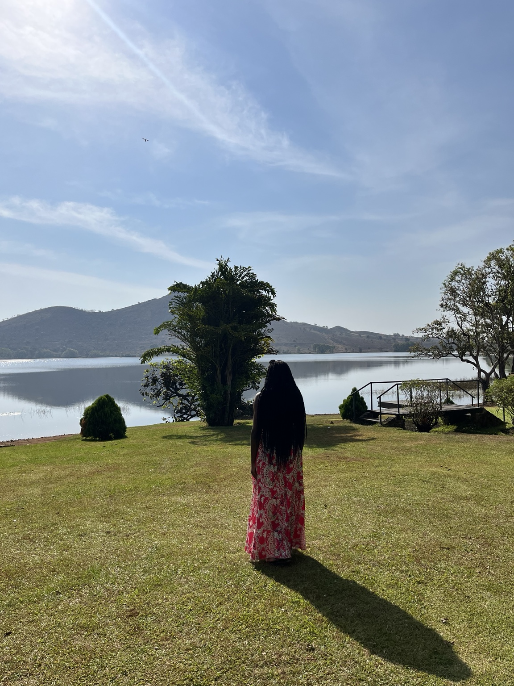
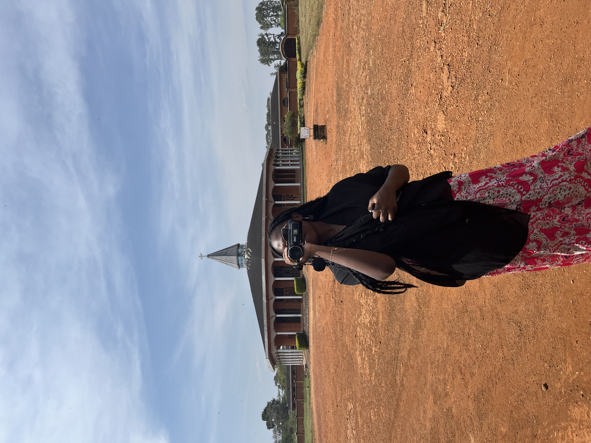
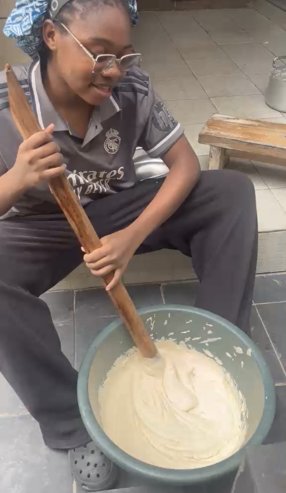
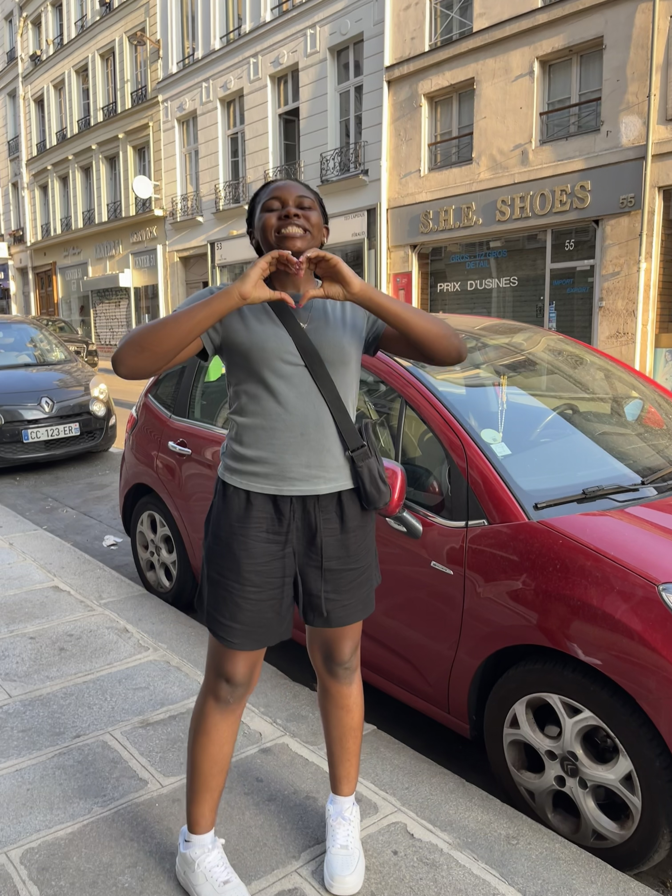
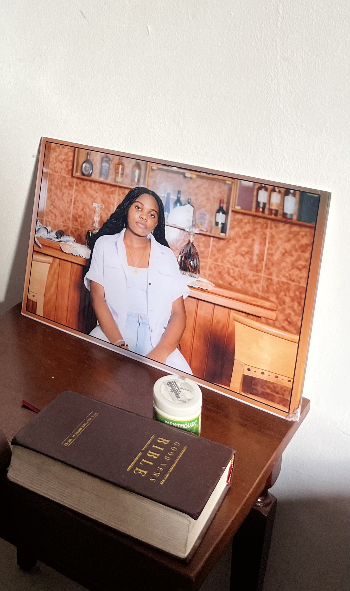
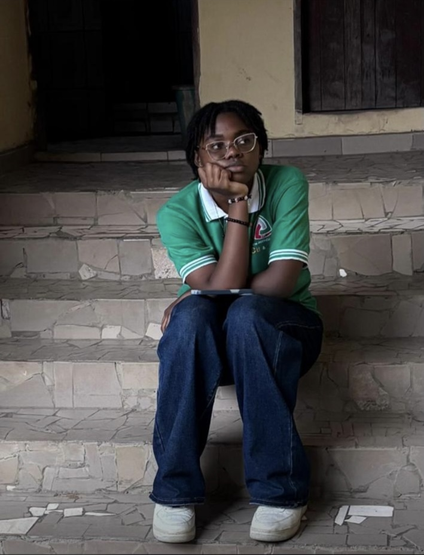

You crossed the horizon.
Welcome to the world that shaped me

🌙The Dreamer
Ever since I was young, I’ve loved imagining, creating, and believing that impossible things could become real. Every goal I’ve ever chased began as a dream. But dreams alone aren’t enough they need knowledge to come to life.
📚The Student
That’s why I fell in love with learning. Whether at school, at home, or through life’s experiences, my curiosity has always pushed me to understand more. I never wanted to know everything I simply wanted to keep discovering. And that curiosity soon made me want to experience everything life had to offer.


🏆The Competitor
From sports to new skills and challenges, I found myself saying “yes” more often than “no.” Competition taught me discipline, resilience, and confidence. Winning is exciting, but the moments I treasure most are the memories I create with the people around me. Those experiences also revealed another side of me…


🎨 The Creative
A mind that never stops imagining eventually needs an outlet. My creativity found its way into everything I touched—designing, writing, coding, solving problems and seeing possibilities where others saw ordinary things.
My brain never really switches off and honestly... I love it. Creating allows me to leave a little piece of myself in everything I make. And somehow, that creativity always found its way into one place...
🍕 The Foodie
...the kitchen. Cooking became more than preparing meals; it became another way to create. Every spice, ingredient and recipe tells a story, and every shared meal becomes a memory.
Food is my comfort, my happiness and one of my favorite ways to connect with people. Because no recipe or achievement means much without someone to share it with.


❤️ The Friend
Somewhere along the way, I unknowingly became the person who loves to listen, laugh, encourage and simply be present. I value genuine connections more than popularity because the smallest acts of kindness often leave the biggest impact.
If there's one thing I hope people remember about me, it's how they felt after spending time with me. And whenever I wonder where that love comes from, my heart always points in the same direction.
✝️ The Believer
My faith reminds me that I'm never walking alone. Before my own understanding, I seek God's wisdom. He gives me peace when life feels uncertain, humility when things go well and strength when they don't.
Every dream, every lesson, every friendship and every step I take is shaped by His grace. And after everything I've shared, there's only one last part of my story left...


The Human
Who am I, beneath every dream, every title, and every achievement? Simply someone who laughs loudly, overthinks sometimes, loves deeply, makes mistakes, keeps learning, and chooses to keep growing. Because at the end of the day, all of these chapters come together to tell one story...mine.



Who is Nathy?
Nathy is someone who loves deeply, dreams fearlessly, and refuses to settle for an ordinary life. Endlessly curious whether about technology, people, or faith she asks questions, learns relentlessly, and keeps building until everything makes sense.
She values loyalty over popularity, chooses kindness as a way of life, and balances ambition with a wonderfully nonchalant charm. Beneath the laughter and the chaos is a heart that feels deeply, loves unconditionally, and quietly carries more than it lets the world see. She's still learning that she doesn't have to have everything figured out to keep moving forward.
Above all, she hopes to leave the world and the people around her a little better than she found them. Because, in the end, she is built by faith, love, resilience... and ✨memories✨.